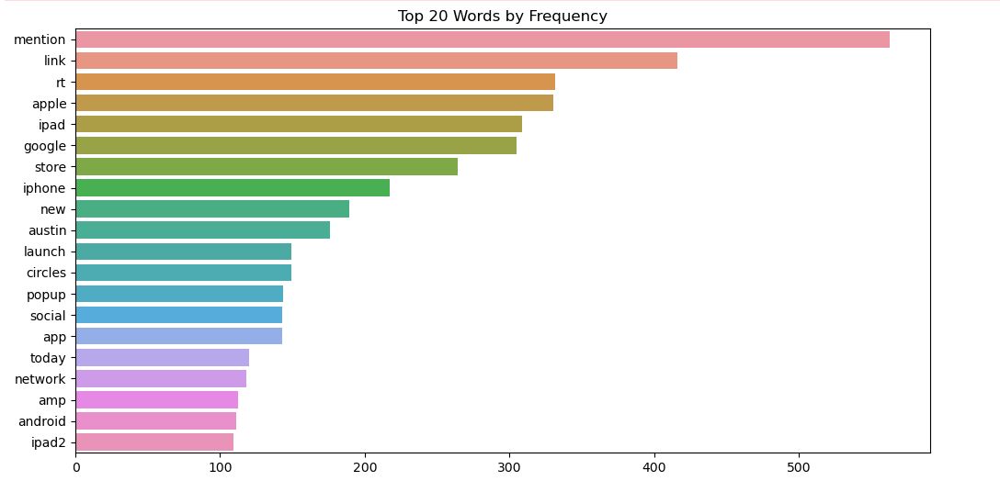
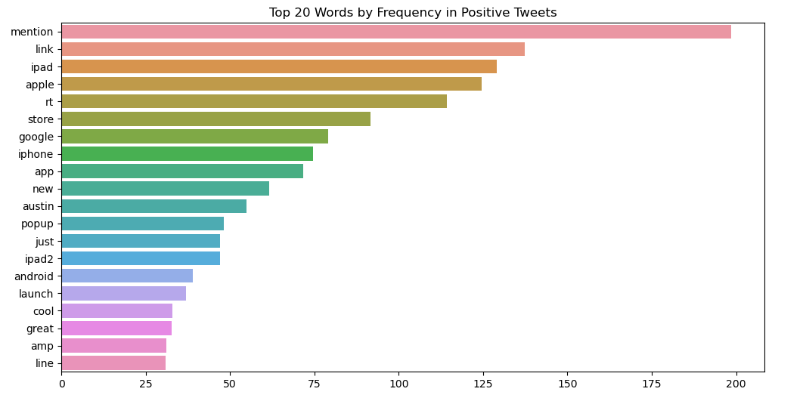
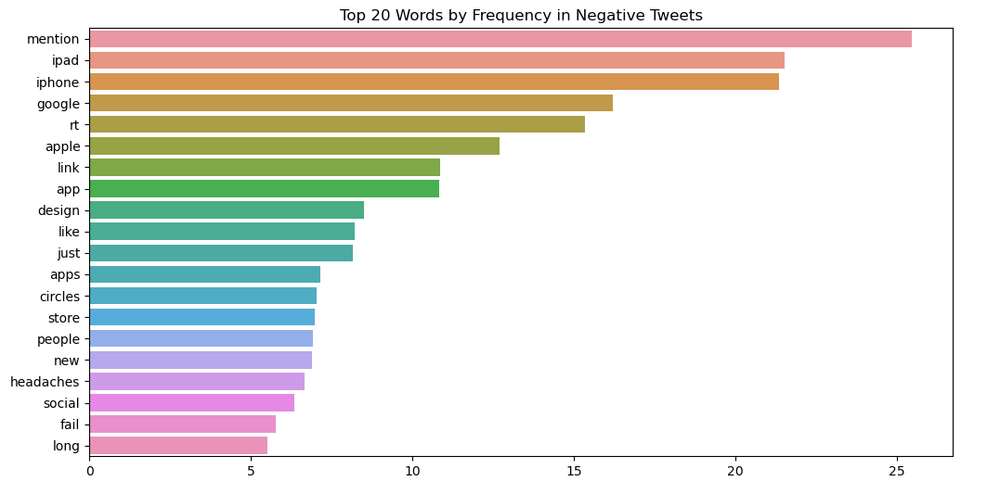
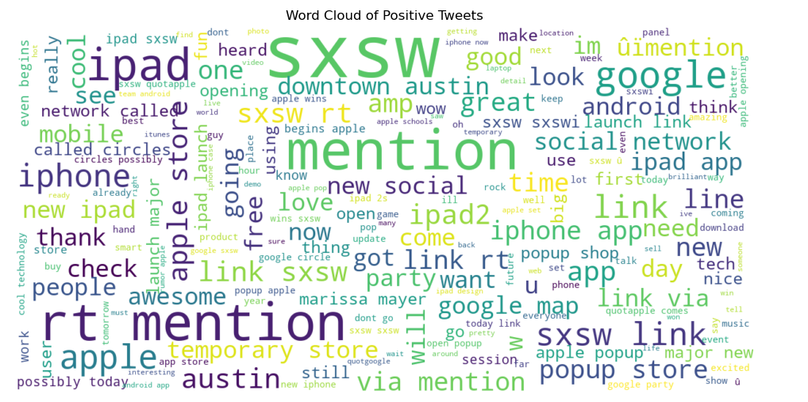
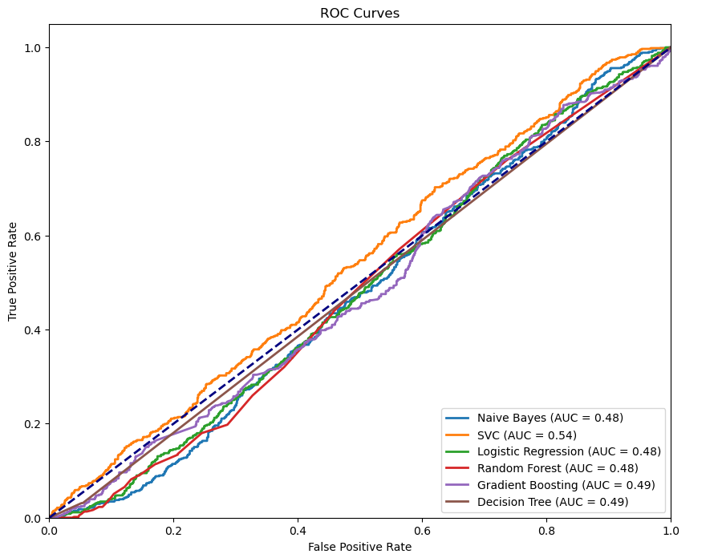

Business Understanding
Our project aimed to analyze sentiment in tweets related to brands and products. Understanding public sentiment is crucial for businesses to gauge customer opinions, identify trends, and improve their offerings. We used a dataset from CrowdFlower via data.world, containing over 9,000 tweets rated by human raters for sentiment as positive, negative, or neither.
Data Understanding
The dataset included tweets with sentiments and brand/product mentions. We explored the data to ensure its suitability for analysis. Key columns were `tweet_text`, `emotion_in_tweet_is_directed_at`, and `is_there_an_emotion_directed_at_a_brand_or_product`.

Data Preprocessing
We created a `DataPreprocessor` class for data preparation, which included:
- Renaming Columns: Renaming columns to intuitive names (`tweet`, `brand_product`, and `sentiment`).
- Mapping Sentiments: Standardizing sentiment labels to `No emotion`, `Positive`, `Negative`, and `Invalid`.
- Handling Missing Data: Filling missing `brand_product` values by identifying mentions in tweets.
- Cleaning Text: Removing punctuation and converting text to lowercase for consistency.
This preprocessing ensured clean, consistent data ready for analysis.
Text Vectorization
Using the `TextVectorizer` class, we transformed the cleaned tweets into numerical features with TF-IDF (Term Frequency-Inverse Document Frequency). We visualized the most frequent words in tweets using bar plots and word clouds for positive and negative sentiments, providing insights into common themes in each sentiment category.



Model Training
We trained six different models with the `ModelTrainer` class:
- Naive Bayes
- Support Vector Classifier (SVC)
- Logistic Regression
- Random Forest
- Gradient Boosting
- Decision Tree
Each model was trained on TF-IDF features and sentiment labels.
Model Evaluation
We evaluated model performance with the `ModelEvaluator` class, providing metrics such as accuracy and ROC (Receiver Operating Characteristic) curves. ROC curves visualized trade-offs between true positive and false positive rates for each model.
Accuracy results for each model were:
- Naive Bayes: 63.08%
- SVC: 65.68%
- Logistic Regression: 66.04%
- Random Forest: 66.04%
- Gradient Boosting: 63.44%
- Decision Tree: 59.62%

Recommendations
Based on our findings, we recommend the following actions:
- Model Improvement: Enhance model performance by collecting more labeled data, experimenting with advanced models like BERT, and fine-tuning hyperparameters of existing models.
- Feature Engineering: Improve text preprocessing and feature extraction by including more sophisticated text-cleaning techniques and adding features such as sentiment scores from lexicons or embeddings from pre-trained language models.
- Real-Time Analysis: Implement the sentiment analysis system in real-time to monitor tweets as they come in, allowing businesses to react promptly to customer feedback.
- Broader Application: Extend the analysis beyond Twitter to other social media platforms to gather a more comprehensive view of public sentiment.
- User Feedback: Incorporate user feedback to continually refine and improve the sentiment analysis system.